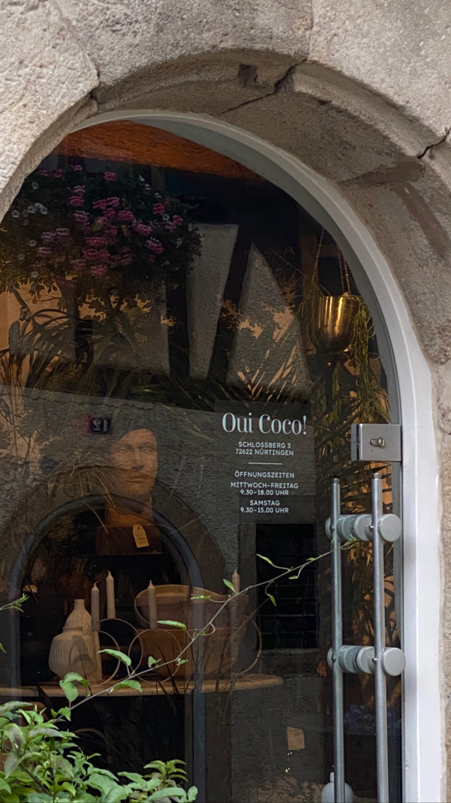
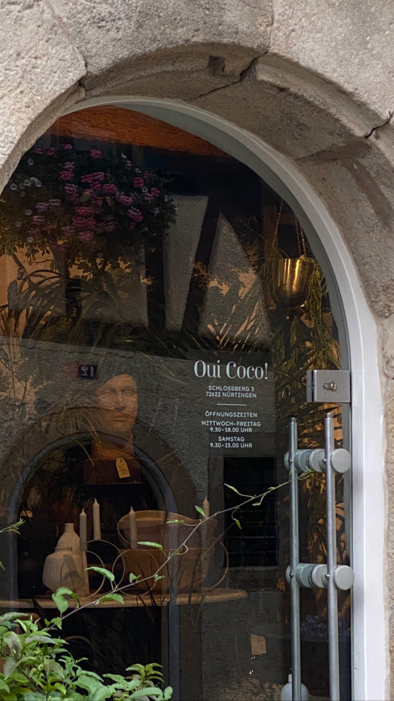
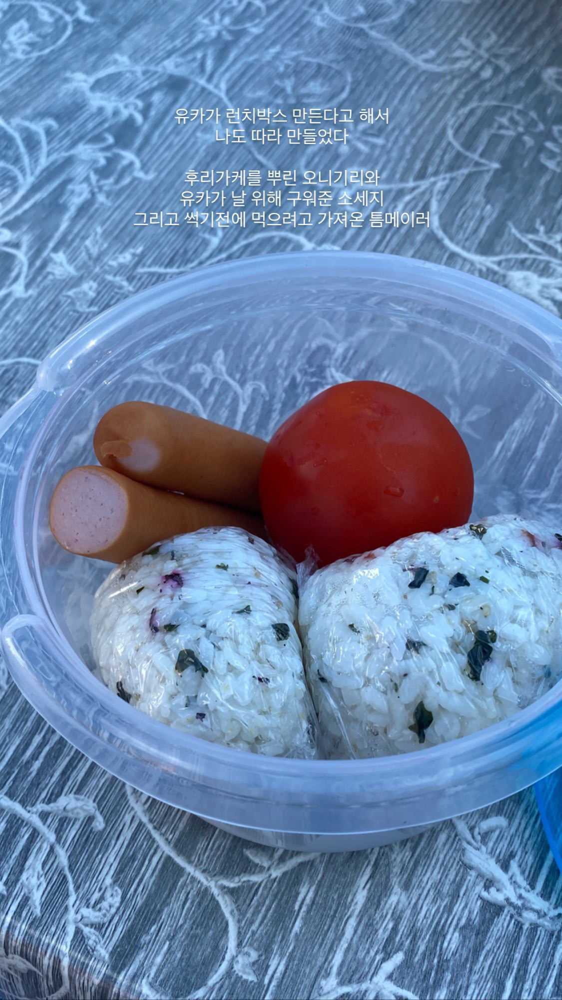
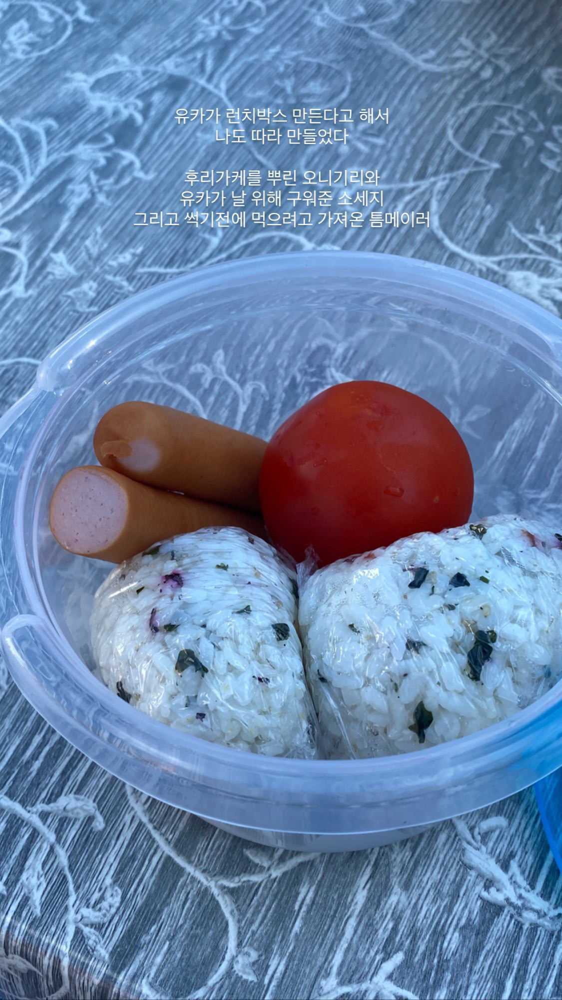

아침 달리기를 하면서 보는 풍경들
2025.10.12간만에 화창한 날이다. 그런 날은 아침에 일어났을 때 공기 부터가 다르다. 눈을 채 뜨지도 않았는데 벌써부터 상쾌한 바람 향이 코를 스치고 지나간다. 한 두달 전부터 맑은 아침에 드는 생각이 있다. 바로 달리러 나가야겠다는 생각이다. 특히나 요근래 계속 비가 왔어서 오늘이야말로 찌뿌둥한 몸을 풀고, 지난날 먹었던 마라 짜파구리와 치킨을 청산할 기회로구나 싶었다. 이불을 개고 계란 한 개와 콩 미숫가루를 아침으로 먹었다. 공복 달리기가 좋다는 말을 어디선가 들은 적이 있지만 나한텐 아니다. 빈속으로 달리면 조금만 뛰어도 현기증이 나기 때문이다. 애써 대공원까지 갔는데 얼마 뛰지 못하면 손해보는 기분이 들어, 달리기 전에는 항상 배를 든든하게 채워둔다. 며칠 전에 엄마가 사준 갈색 나이키 트레이닝 바지를 입고, 검정색 바람막이 자켓을 입는다. 에어팟은 위험하니까 한 쪽만 귀에 꽂는다. 요즘은 듣고싶은 노래가 별로 없어, 팟캐스트를 튼다. 내 영혼의 단짝 ‘강소팟’. 만반의 준비를 하고 밖으로 나갔다. 요즘은 하루만 밖에 나오지 않아도 계절이 휙휙 변하는 게 느껴진다. 오늘 본 풍경은 완연한 가을의 모습이었다. 떨어진 낙엽이 발에 채이는가 하면, 부는 바람이 살짝 쌀쌀하게 느껴지는 게 엊그제 같았던 여름이 언제 왔었냐는 듯 하다. 바람이 부는 날에는 달리기를 열심히 해도 땀이 금새 말라버려서 운동을 전보다 열심히 하지 않은 것 같이 느껴지기도 한다. 그치만 기분좋게 뛰기에는 가장 좋은 날씨다. 분주하게 회사나 학교로 향하는 사람들을 재치고 나는 대공원 입구로 곧장 뛰어갔다. 그런데 초입부터 ‘접근 금지’ 싸인으로 막혀있는 것이다. ‘이런 적이 없었는데’ 싶으면서 기웃기웃 거리는데, 저 멀리서 학생들이 걸어가는 게 보였다. 접근을 금한다는 안내 표지판을 무시하고 걸어들어간 건가 싶으면서도, 이 길이 아니면 달리 우회해서 갈 곳이 없어 어쩔 수 없이 나도 무시하고 들어간다. 초입에만 있을 줄 알았던 학생들은 점차 그 수를 늘려가더니, 서울랜드에 다다를 쯤에는 콘서트장을 방불케 할 정도의 인파가 사방에서 모여들었다. 야외활동을 하기에 적절한 날씨 탓인지, 주변 학교들에서 체험학습을 많이 오는 듯하다. 이틀 중 하루는 꼭 저들끼리 떠들며 올라오는 학생들 무리를 마주쳤기 때문이다. 혹시나 내 후배들이 아닐까 하고 유심히 무리들을 살펴보지만, 왠일인지 이곳에 오는 학생들 모두가 사복을 입고 있다. 이래가지고는 어느 동네에서 온 아이들인지 알 수가 없다. 그나마 아파트 단지에서부터 걸어올라온 아이들이 많을 수록 우리 동네와 가까운 곳에 위치한 학교를 다니는구나 하고 유추할 수 있을 뿐이다. 아침에는 대공원 1바퀴, 저녁에는 2바퀴를 달린다. 아침에 너무 오래 뛰면 왠지 시간을 허비해 버린 것 같은 기분이 들기 때문이다. 저녁에는 하루동안 먹은 것들을 청산하기 위해 더 오래 뛰는데도 부채감이 들지 않는다. 한 바퀴 달리기가 끝날 때마다 코끼리 열차 티켓 매표소에서 100m 가량 떨어져있는 화단에서 다리와 어깨를 풀어준다. 그러고는 다시 언덕을 올라 아파트 단지 쪽으로 향하는 게 나의 모닝 달리기 루틴이다. 운동을 마치고 대공원 초입으로 향할 때가 가장 기분 좋은 순간이다. 이때는 온전히 숨을 고르는 일과 팟캐스트를 듣는 데에 집중할 수 있다. 귓속에서 벌이는 두 명의 DJ가 재잘거리며 대화하는 걸 듣는 동안 금새 집 앞 공원으로 접어든다. 오늘은 그곳에서 귀한 풍경을 봤다. 어쩌면 이 풍경을 말하려고 앞에 긴긴 서술어들을 풀어낸 걸지도 모른다. 며칠간 내렸던 비 때문에 도서관 앞에 물 웅덩이가 여러 개 생겼다. 그 중 가장 커다란 곳에서 2-3살쯤 되어 보이는 아가가 장화를 신고, 왼손은 할머니의 손을 붙들은 채 웅덩이를 걷고 있었다. 아가가 새로 산 장화를 신고싶었을까, 아니면 감기 안 걸릴 정도로 화창한 날에 비오는 날을 경험하게 해주고 싶었던 할머니의 마음 때문이었을까. 아가의 걸음으로 5걸음이나 되는 커다란 물웅덩이를 몇 번이나 가로지르는 모습을 보며 절로 미소가 지어졌다. 아침에 부지런을 떨며 나왔기 때문에 볼 수 있었던 행복한 동네의 모습이다. 이러니 아침에 달리기를 핑계삼아 자꾸 밖으로 밖으로 나갈 수 밖에 없는 일이다.
← 목록으로 돌아가기


 


 
